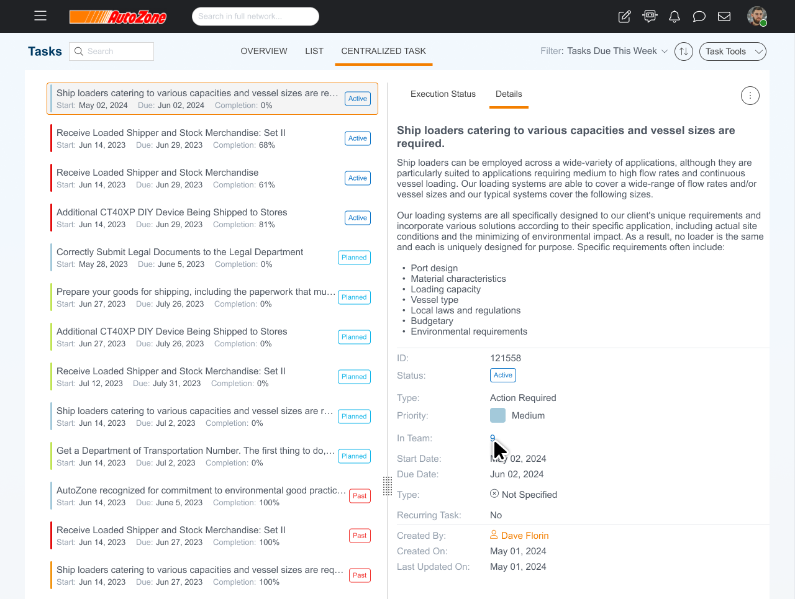
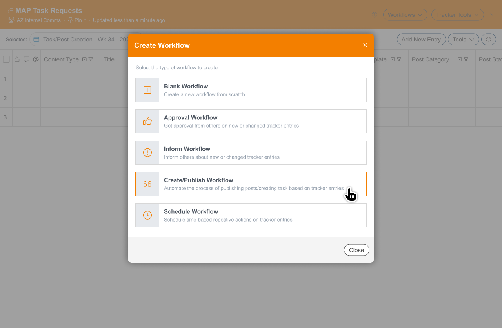
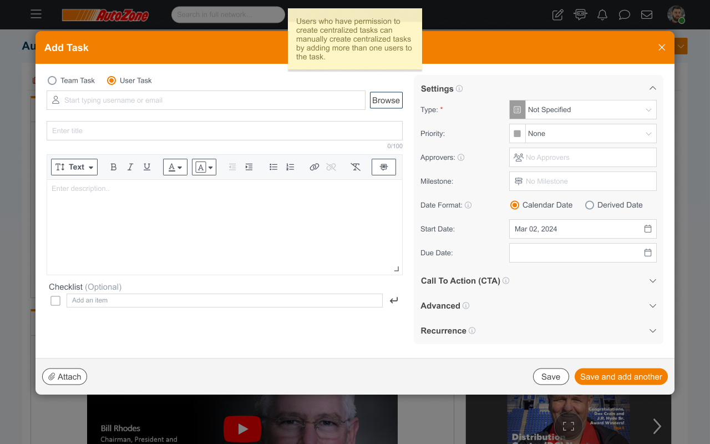
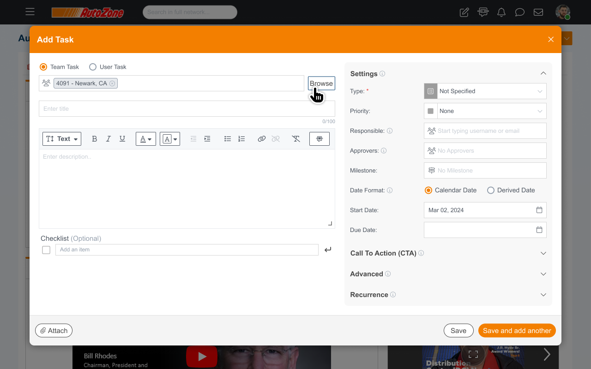
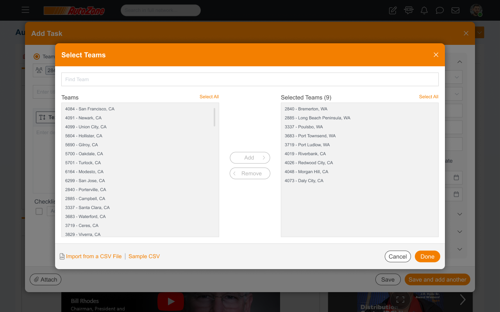

Centralized Task Management
I extended the existing workflow engine so tracker entries could create tasks for store teams.
- Role
- Senior UI/UX Designer
- Platform
- Web, enterprise intranet · Distributed retail ops
- Year
- 2024
The challenge
Retail teams relied on manual work to create tasks, assign them at scale, and track progress across stores.
Outcome
Tracker entries can create tasks automatically, while managers see progress for the locations they manage.

The Approach
Extend the existing model
The first version distributed tasks to store teams. I worked on the next version to support individuals, automation, and visibility across locations.
Reuse familiar workflows
Tracker entries already held structured operational data. Connecting them to the existing workflow engine avoided introducing a separate automation tool.
Respect each manager’s scope
The same central task view serves different roles, but each manager sees only the stores and people they are authorised to manage.
The Key Decision
A separate automation tool would duplicate workflows already in the product.
I extended the existing workflow engine to create tasks from tracker entries.
The same task system supports both automated and manual creation.

The Solution
Assign at scale
Choose individuals or store teams using existing filters. For large rollouts, admins can search, select multiple teams, or import a list.
Track the right work
Managers can check completion by team or person without seeing locations outside their scope. Store teams can still find the work in their own familiar space.
Review before creating
Approvers can preview a task before the workflow creates it.


